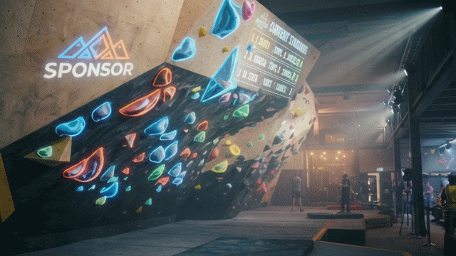
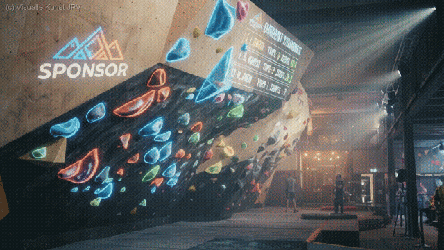

Interactive visuals and sponsors Examples


What the show includes
- Interactive event including the climbing wall geometry. Visuals adapted to the wall and environment.
- Creative sponsor visuals mapped to the competition wall.
- Integration of any media you provided us.
- Projection runs only when the wall is clear, such as between attempts and during breaks.
Further services
- New media design, like a specific couple of minutes show, uppon request.
- Interactive visuals that a moderator can interact with.
- Integration of online scoring systems (for example Fight Gravity).
- Ambient light control for optimal projection quality and balance (available to rent).
- Integration of live replays mapped to the wall (if pre-edited content is available).
- Output for the stream and side screens.
Delivery & budget
| Projected Area · approx. 6 × 4 m | |
|---|---|
| Projector rental** | from €200 / 1 day |
| Cameras and compute | from €50 |
| Content and interactive development | from €100 |
| On-site crew and calibration | from €200 |
| Travel | from €0.30 per km, round trip from Munich |
| Estimated total | from €550 (plus travel) |
** Projectors are the biggest cost, and how many you need depends on three things: how bright the venue lights are (the brighter the room, the more powerful the projector), how large an area you want to cover, and how far the projector sits from the wall. The price shown is a starting point for one 8,000-lumen projector covering about 6 × 4 m. We confirm the exact setup on site.
Travel is charged at €0.30 per kilometre for the round trip from Munich. This is the German tax-free mileage rate for business trips by car.
Venue setup
- Secure zones for projector placement.
- Time for beamer and camera setup and calibration (possible during route setting).
- Dim ambient illumination if possible (the brighter the lights, the more powerful and expensive the projectors required).
- Power supply for the projector(s) and camera(s).
Brightness check
The picture looks clearer the darker the room is. This estimate is for one 8,000-lumen projector covering a 6 × 4 m area, placed about 7 to 12 m from the wall.
| Room lighting | Light on the wall | How the picture looks |
|---|---|---|
| Dim room, lights mostly off | about 50 lx | Great: strong, vivid colours |
| Dimmed gym lights | about 100 lx | OK: clear, but a little faded |
| Bright gym lights | about 200 lx | Poor: washed out, hard to see |
If the gym stays at dimmed or bright lighting, we add a second projector on the same area. Two projectors make the picture about twice as bright.
Not sure how bright your room is? Measure the light on the wall with a light meter app. On Android, the free app phyphox (the "Light" experiment) works well. iPhones can't read the light sensor, so use a handheld lux meter (about €20–30) instead. Phone readings are rough, so a ballpark figure is enough.